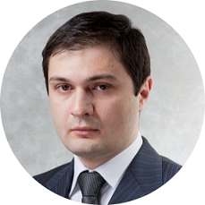

|  |
Samir NadraProject Manager/Porject Controls Manager |
Successful implementation of project management systems and reporting automation systems. Core expertise in project controls and risk management. Competencies in business analytics, financial, operational, and strategic management. |
| Dates | Company | Position |
|---|---|---|
| March 2021 – September 2022 | AO “Khimproekt” | Project Planning and Monitoring Manager |
| August 2020– March 2021 | Gazpromneft-Moscow Oil Refinery | Project Planning and Monitoring Manager |
| August 2014 to July 2020 | Gazpromneft-Lubricants | Program Planning and Control Manager |
| November 2013 to August 2014 | Ernst & Young | Senior Consultant - Advisory |
| August 2012 to October 2013 | CFG (Caspian Flat Glass) | Planning Engineer |
| April 2011 to June 2012 | STROYTRANSGAZ (Algeria) | QA Engineer |
| September 2009 to August 2010 | STROYTRANSGAZ (UAE) | QA Engineer |
|
|